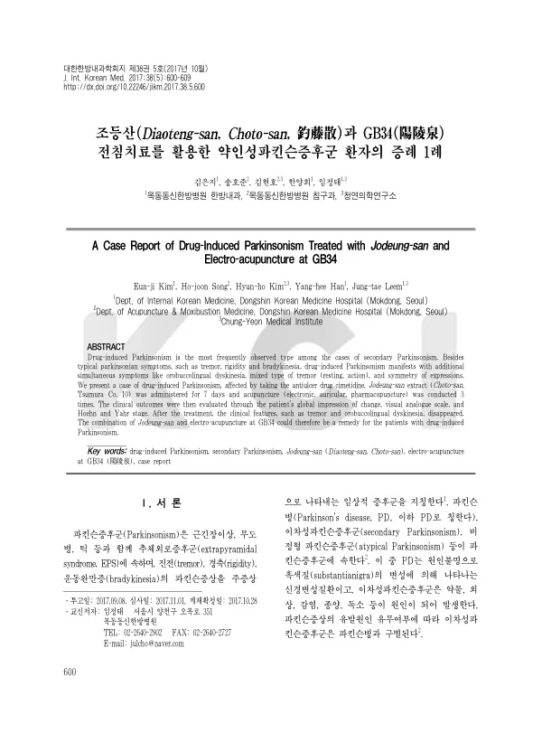

A Case Report of Drug-Induced Parkinsonism Treated with Jodeung-san and Electro-acupuncture at GB34
Kim Ej, Song Hj, Kim Hh, Han Yh, Leem Jt
The Journal of Internal Korean Medicine 38(5):600-609

첫 장 · 오픈액세스First page · open access
논문 소개Summary
파킨슨증후군 가운데 약이 원인인 것을 약인성 파킨슨증이라 부릅니다. 이차성 파킨슨증에서 가장 흔하고 항정신병약과 위장관 운동개선제, 항현훈제가 대표적인 유발 약물입니다. 원인 약을 끊으면 대개 4개월 안에 가라앉지만 6개월에서 18개월까지 이어지기도 하고 20%까지는 오히려 진행합니다. 파킨슨병에 앞서 나타나기도 해 두고 볼 일이 아닙니다. 그런데 치료의 핵심은 예방과 약물 중단이고, 증상을 줄이려 항콜린제를 쓰면 고령 환자에게 이차 부작용이 생깁니다.
74세 여성이 어깨 통증으로 주사와 경구약을 받은 뒤 몸통과 양쪽 팔, 입 주변에 갑자기 떨림이 생겨 내원했습니다. 가지고 온 약을 조사해 항궤양제 시메티딘이 들어 있는 것을 확인했습니다. 본태성 진전과 특발성 파킨슨병, 비정형 파킨슨증후군은 다섯 가지 근거로 배제했습니다. 유발 약물을 복용한 뒤 생겼고, 갑작스러웠고, 떨림이 몸통과 입 주변에 양측성으로 나타났고, 이전 약물 복용 때도 같은 증상이 있었고, 약을 끊자 완화되었다는 것입니다. 양약을 모두 끊고 조등산 7일분과 침 치료 세 차례를 시행했습니다.
경과는 빨랐습니다. 1일차에 통증시각척도 10점, 훈-야 2단계이던 것이 2일차에 몸통과 왼팔 떨림이 사라지고 입 주변 불수의 운동이 절반으로 줄어 1점, 1단계가 되었습니다. 3일차에는 오른팔 떨림이 0.5헤르츠 아래로 떨어지고 입과 볼, 혀의 불수의 운동이 사라져 일상생활에 지장이 없었습니다. 환자 전반적 변화 인상은 1이었습니다.
이 증례의 강점은 결과보다 보고 태도에 있습니다. 저자들은 시메티딘 복용과 이상운동증 발생을 한국의약품안전관리원에 의약품 이상사례로 실제 보고했고, 세계보건기구 웁살라모니터링센터 기준으로 인과성을 상당히 확실함으로, CTCAE 기준으로 중증도를 2등급으로 평가했습니다. 한방 의료기관의 증례보고에서 이상사례 보고를 함께 하는 경우는 드뭅니다.
한계도 적었습니다. 증례 하나이고 조등산과 양릉천 전침, 황련해독탕 약침, 이침을 동시에 썼으므로 어느 것이 얼마나 작용했는지 가를 수 없습니다. 재발을 보려면 최소 6개월을 지켜봐야 하는데 한 달 뒤 외래에 오지 않아 확인하지 못했습니다. 기저에 파킨슨병이 있었는데 약으로 잠시 악화된 것일 가능성도 배제하지 못했습니다.
Parkinsonism caused by medication is called drug-induced parkinsonism. It is the commonest form of secondary parkinsonism, typically provoked by antipsychotics, gastrointestinal prokinetics and antivertigo drugs. Stopping the offending drug usually settles it within four months, but it can persist for six to eighteen months and in up to 20% of cases it progresses instead. It can also precede Parkinson's disease, so it is not something to watch and wait on. Yet management rests on prevention and withdrawal, and anticholinergics given to relieve symptoms produce secondary adverse effects in the elderly patients most affected.
A 74-year-old woman presented with tremor that had appeared suddenly in her trunk, both arms and around her mouth after injections and oral medication for shoulder pain. Examination of the medication she brought identified cimetidine, an antiulcer drug. Essential tremor, idiopathic Parkinson's disease and atypical parkinsonism were excluded on five grounds: onset after taking a known offending drug, sudden onset, tremor appearing bilaterally in the trunk and around the mouth, the same symptoms after previous medication, and relief on stopping the drug. All conventional medication was discontinued and seven days of Jodeung-san with three acupuncture sessions were given.
Recovery was quick. On day 1 the visual analogue scale stood at 10 and the Hoehn and Yahr stage at 2. By day 2 trunk and left arm tremor had gone and orobuccolingual dyskinesia had halved, bringing these to 1 and stage 1. By day 3 right arm tremor had fallen below 0.5 Hz and the involuntary movements of mouth, cheeks and tongue had resolved, leaving daily activities unimpeded. Patient global impression of change was 1.
The strength of this report lies less in the outcome than in how it was reported. The authors filed the cimetidine-associated dyskinesia as an actual adverse drug event with the Korea Institute of Drug Safety and Risk Management, rated causality as probable/likely under World Health Organization–Uppsala Monitoring Centre criteria and severity as grade 2 under CTCAE. Case reports from Korean medicine institutions rarely file the corresponding drug safety report.
The limitations are stated. This is one case, and Jodeung-san, electroacupuncture at GB34, Hwangryeonhaedok-tang pharmacopuncture and auricular acupuncture were used together, so no contribution can be separated out. Recurrence requires at least six months of follow-up, and the patient did not return to the outpatient clinic a month later. Nor could the possibility be excluded that underlying Parkinson's disease had been transiently worsened by the medication.
인용Cite
Kim Ej, Song Hj, Kim Hh, Han Yh, Leem Jt. A Case Report of Drug-Induced Parkinsonism Treated with Jodeung-san and Electro-acupuncture at GB34. The Journal of Internal Korean Medicine. 2017;38(5):600-609. doi:10.22246/jikm.2017.38.5.600